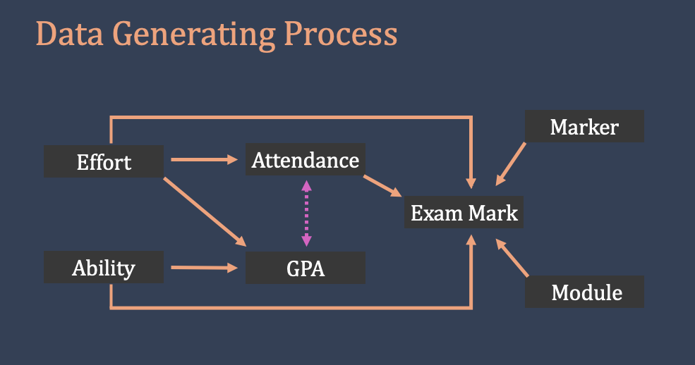

# Preliminaries ####
# remove everything from the environment
rm(list = ls())
# set the working directory:
setwd("~/methods/") # adjust the directory address accordingly9 Regression II
In this lab, we will work on a dataset named exam_marks. We have already seen this dataset in the last lecture. It is available on the module Blackboard. Alternatively, you can download it using this link.
Place the file under a suitable directory and set your workspace.
9.1 Preliminaries
# require the packages
library(tidyverse)── Attaching core tidyverse packages ──────────────────────── tidyverse 2.0.0 ──
✔ dplyr 1.1.4 ✔ readr 2.1.5
✔ forcats 1.0.0 ✔ stringr 1.5.1
✔ ggplot2 3.5.1 ✔ tibble 3.2.1
✔ lubridate 1.9.3 ✔ tidyr 1.3.1
✔ purrr 1.0.2
── Conflicts ────────────────────────────────────────── tidyverse_conflicts() ──
✖ dplyr::filter() masks stats::filter()
✖ dplyr::lag() masks stats::lag()
ℹ Use the conflicted package (<http://conflicted.r-lib.org/>) to force all conflicts to become errorsLet’s import the dataset.
# Import the dataset: Exam Marks ####
d <- read.csv("data/exam_marks.csv") # load the data depending on the location on your comouterWe have discussed this dataset in the lecture, but let’s quickly remind ourselves of the variables. Here is the codebook.
| Variable Name | Variable Explanation | Type of Variable | Possible Value |
|---|---|---|---|
| exam_id | ID of the exam | Numerical | |
| module_name | Name of the module | Categorical | French or Politics |
| marker_name | Name of the marker | Categorical | Alice, Bob, or Charlie |
| attendance_student | Module attendance rate of the student | Numerical | 0 – 100% |
| gpa_student | Overall GPA of the student (previous modules) | Numerical | 0 – 100% |
| mark | Exam mark | Numerical | 0 – 100% |
It is a good idea to use summary() to have a snapshot summary of the variables in the dataset.
# summary of all variables:
summary(d) exam_id module_name marker_name attendance_student
Min. :240001 Length:100 Length:100 Min. : 3.00
1st Qu.:240026 Class :character Class :character 1st Qu.: 26.00
Median :240050 Mode :character Mode :character Median : 45.50
Mean :240050 Mean : 50.60
3rd Qu.:240075 3rd Qu.: 73.25
Max. :240100 Max. :100.00
gpa_student mark
Min. :39.10 Min. :16.00
1st Qu.:56.45 1st Qu.:46.75
Median :63.34 Median :60.00
Mean :64.38 Mean :61.04
3rd Qu.:73.92 3rd Qu.:75.00
Max. :89.78 Max. :93.00 Note that the output displays the numerical summaries of four variables. However, two variables, marker_name and module, are stored as text. These are categorical variables. Let’s see how to deal with them.
9.2 Dealing with categorical variables
There are two categorical variables in this dataset: marker_name and module. They are stored as text. We will tell R to consider these as categorical variables, but first, let’s see the categories and respective frequencies.
# frequency table for marker name:
table(d$marker_name)
Alice Bob Charlie
32 35 33 There are three markers Alice, Bob, and Charlie. When you look at the variable, you can see that it is stored as text.
# let's check marker_name
d$marker_name |> head(5) # show only the first 5 observations of marker[1] "Charlie" "Alice" "Charlie" "Charlie" "Bob" You can use factor() to tell R to consider this variable as a categorical variable. Let’s create a new variable marker and store the information in marker_name as a categorical variable.
# generate a new variable called marker: it is a categorical variable
d$marker <- factor(d$marker_name)Let’s see how this variable is different from marker_name.
# Display first five observations of marker:
d$marker |> head(5)[1] Charlie Alice Charlie Charlie Bob
Levels: Alice Bob CharlieCarefully look at the output above. Observations are no longer enclosed in quotation marks. They are now treated as categories of a categorical variable rather than textual data. Most importantly, the output now displays Levels: and respective categories. The first category, in this case, Alice will be the baseline in a regression analysis.
You can also see the difference using class().
class(d$marker) # class of marker should be factor (meaning categorical)[1] "factor"class(d$marker_name) # class of marker_name is character (textual information)[1] "character"You can also use the summary() function again to see the difference.
# summary of all variables:
summary(d) exam_id module_name marker_name attendance_student
Min. :240001 Length:100 Length:100 Min. : 3.00
1st Qu.:240026 Class :character Class :character 1st Qu.: 26.00
Median :240050 Mode :character Mode :character Median : 45.50
Mean :240050 Mean : 50.60
3rd Qu.:240075 3rd Qu.: 73.25
Max. :240100 Max. :100.00
gpa_student mark marker
Min. :39.10 Min. :16.00 Alice :32
1st Qu.:56.45 1st Qu.:46.75 Bob :35
Median :63.34 Median :60.00 Charlie:33
Mean :64.38 Mean :61.04
3rd Qu.:73.92 3rd Qu.:75.00
Max. :89.78 Max. :93.00 Notice that the output for marker displays the frequencies of the groups, whereas marker_name just says character. You can also check if respective categories overlap.
table(d$marker_name, d$marker)
Alice Bob Charlie
Alice 32 0 0
Bob 0 35 0
Charlie 0 0 33Next, it is time to tell R to store the information in module_name in a categorical variable called module. Try to do it yourself first before seeing the code below.
Code
# module: a factor variable
d$module <- factor(d$module_name)Let’s see the new variable (and categories). The first category shown in Levels will be the default baseline in any regression analysis.
# See the categories: Levels tell the categories.
d$module |> head(5)[1] Politics Politics Politics Politics French
Levels: French PoliticsIt is a good idea to check if the information recorded is the same.
# table of :
table(d$module_name, d$module)
French Politics
French 50 0
Politics 0 509.3 Running regression with a categorical variable
Let’s follow the order in the lecture and run a regression of mark on module. The regression equation is below:
\[ \hat{y} = \alpha + \beta \cdot Module \]
# regression:
lm(mark ~ module, data = d)
Call:
lm(formula = mark ~ module, data = d)
Coefficients:
(Intercept) modulePolitics
58.54 5.00 Regression output returned two coefficients: (Intercept) and modulePolitics. To use module in the regression analysis, R automatically picked one category as baseline ( French in this case) and turned the other category (Politics) into a binary variable. The regression equation turns into:
\[ \hat{y} = \alpha + \beta \cdot Politics \]
\[ 1. \text{ When the module is Politics: } Politics = 1 \]
\[ \hat{y} = \alpha + \beta \cdot 1 \] \[ \hat{y} = \alpha + \beta \]
\[ \hat{y} = 58.54 + 5.00 \]
\[ \hat{y} = 63.54 \]
\[ 2. \text{ When the module is French: } Politics = 0 \]
\[ \hat{y} = \alpha + \beta \cdot 0 \] \[ \hat{y} = \alpha \] \[ \hat{y} = 58.54 \] Recall from the last week that regression returns conditional means in a bivariate analysis with discrete values. Let’s write the respective coefficients and see if this is the case.
d |> group_by(module) |> summarise(module_means = mean(mark))# A tibble: 2 × 2
module module_means
<fct> <dbl>
1 French 58.5
2 Politics 63.59.3.1 Changing the baseline category
Let’s say, we would like to make French as the baseline and see the coefficient for Politics. We can do this by relevel() function.
# redefine the baseline level (overwrite the existing variable):
d$module <- relevel(d$module, ref = "French")
# run the regression again:
lm(mark ~ module, data = d)
Call:
lm(formula = mark ~ module, data = d)
Coefficients:
(Intercept) modulePolitics
58.54 5.00 9.3.2 Task 1: Run a regression with marker
- Run a regression of mark on marker. Interpret the results:
\[ \hat{y} = \alpha + \beta \cdot Marker \]
Show/Hide the Answer (R Code)
# run the regression:
lm(mark ~ marker, data = d)- Make Bob the baseline category and run the regression again. Interpret the results.
Show/Hide the Answer (R Code)
# redefine the baseline level (overwrite the existing variable):
d$marker <- relevel(d$marker, ref = "Bob")
# run the regression again:
lm(mark ~ marker, data = d)9.4 Multivariate regression
Next, we will run a series of regression models with multiple controls. Let’s say we are interested in the impact student_gpa on their expected mark. Without any controls, the bivariate regression model is as follows:
\[ \hat{y} = \alpha + \beta \cdot GPA \tag{9.1}\]
# model 1: only gpa
m1 <- lm(mark ~ gpa_student, data = d)
# see the regression coefficients:
m1
Call:
lm(formula = mark ~ gpa_student, data = d)
Coefficients:
(Intercept) gpa_student
-14.368 1.171 - According to Model 1, one point increase in the student GPA is associated with 1.171 points increase in the expected mark.
However, GPA is not the only factor influencing the expected value of the outcome variable. We also know that who the marker is important. Compared to Alice and Charlie, Bob is a more generous marker, giving higher marks on average.
How to account for the impact of marker? We could divide the dataset into three by marker and run three regression models. This approach is possible, but it would be long and cumbersome. We will also have three different estimates for the impact of gpa_student, depending on the marker. This is shown in the block below.
Dividing the dataset by marker
# divide the dataset into three (by marker)
alice <- d[d$marker == "Alice", ]
bob <- d[d$marker == "Bob", ]
charlie <- d[d$marker == "Charlie", ]
# three regression models:
m_alice <- lm(mark ~ gpa_student, data = alice)
m_bob <- lm(mark ~ gpa_student, data = bob)
m_charlie <- lm(mark ~ gpa_student, data = charlie)
# see each output:
m_alice # model for alice
Call:
lm(formula = mark ~ gpa_student, data = alice)
Coefficients:
(Intercept) gpa_student
-22.953 1.216 m_bob # model for bob
Call:
lm(formula = mark ~ gpa_student, data = bob)
Coefficients:
(Intercept) gpa_student
-5.090 1.115 m_charlie # model for charlie
Call:
lm(formula = mark ~ gpa_student, data = charlie)
Coefficients:
(Intercept) gpa_student
-14.451 1.166 - When the marker is Alice, one point of increase in a student’s gpa is associated with 1.22 points of increase in their expected exam mark.
- When the marker is Bob, one point of increase in a student’s gpa is associated with 1.12 points of increase in their expected exam mark.
- When the marker is Charlie, one point of increase in a student’s gpa is associated with 1.17 points of increase in their expected exam mark.
Instead of splitting the dataset into three pieces, a better approach is to consider marker in our regression model directly. In Equation 9.2 below, we are introducing marker as another variable influencing the expected value of our outcome variable, mark.
\[ \hat{y} = \alpha + \beta_1 \cdot GPA + \beta_2 \cdot Marker \tag{9.2}\]
Using Equation 9.2, we can have one estimate for the impact of gpa_student while considering the impact of marker. In other words, we are controlling for marker.
Let’s run Model 2:
# model 2: gpa and marker
m2 <- lm(mark ~ gpa_student + marker, data = d)
# see the model 2:
m2
Call:
lm(formula = mark ~ gpa_student + marker, data = d)
Coefficients:
(Intercept) gpa_student markerAlice markerCharlie
-8.005 1.160 -11.305 -6.032 - According to Model 2, one point increase in the student GPA is associated with 1.16 points increase in the expected mark, controlling for the marker.
After considering who the marker is, there is a tiny change in the expected mark.
9.4.1 Controlling for Attendance Rate
Next, we will consider the attendance rate of a student. As we have seen in the lecture, there is good reason to expect that gpa_student and attendance_student are correlated, even though a student’s previous marks in different modules have no direct impact on their attendance rate for the current module. However, how hardworking a student is is a factor that influences both gpa_student and attendance_rate, linking the two variables. We can simply refer this underlying influence as student effort. Note that student effort is unobservable. Figure 9.1 is an excerpt from the lecture slides, reflecting our theory.

In Model 3, we will add attendance_student as another predictor variable.
\[ \hat{y} = \alpha + \beta_1 \cdot GPA + \beta_2 \cdot Marker + \beta_3 \cdot Attendance \tag{9.3}\]
# Model 3: Adding attendance to the module
m3 <- lm(mark ~ gpa_student + marker + attendance_student, data = d)
# see the model 3 coefficients:
m3$coefficients |> round(2) (Intercept) gpa_student markerAlice markerCharlie
18.62 0.40 -11.56 -7.18
attendance_student
0.44 Let’s pay close attention to the coefficients from Model 3, particularly to gpa_student and attendance_student.
- According to Model 3, one point increase in the student GPA is associated with 0.40 points increase in the expected mark, controlling for the marker and the attendance rate.
- According to Model 3, one point increase in the attendance rate is associated with 0.44 points increase in the expected mark, controlling for the marker and the student gpa.
Let’s compare Model 3 to Model 2: in Model 2, the estimated impact of gpa_student is almost three times higher than in Model 3. In other words, after controlling for attendance_student, the estimated impact of gpa_student is reduced by more than half.
If we do not control for the attendance rate, the GPA also captures the impact of the attendance rate. This is because GPA and attendance rate are correlated.
If we run a fourth model with only attendance_student, we will overestimate the impact of the attendance rate because it will capture the impact of the student gpa:
\[ \hat{y} = \alpha + \beta \cdot Attendance \tag{9.4}\]
# model 4:
m4 <- lm(mark ~ attendance_student, data = d)
# see the coefficeints:
m4$coefficients |> round(2) (Intercept) attendance_student
32.85 0.56 Note that the estimated impact of attendance_student in Model 4 is increased to 0.56 (from 0.44 in Model 3). If we do not control for the student GPA, the attendance rate also captures the impact of the GPA.
For completeness, let’s run Models 5:
\[ \hat{y} = \alpha + \beta_1 \cdot GPA + \beta_2 \cdot Marker + \beta_3 \cdot Attendance + \beta_4 \cdot Module \tag{9.5}\]
# model 5:
m5 <- lm(mark ~ gpa_student + marker + attendance_student + module, data = d)
# see the model 5:
m5
Call:
lm(formula = mark ~ gpa_student + marker + attendance_student +
module, data = d)
Coefficients:
(Intercept) gpa_student markerAlice markerCharlie
16.9668 0.4175 -11.7748 -7.6233
attendance_student modulePolitics
0.4337 3.0767 9.5 Regression Table
As we have seen in the lecture, there is a standard way to report regression outputs. We will use texreg package to produce high-quality regression tables.
T
# Install the package (only once):
install.packages("texreg")# call for the package:
library(texreg)Version: 1.39.4
Date: 2024-07-23
Author: Philip Leifeld (University of Manchester)
Consider submitting praise using the praise or praise_interactive functions.
Please cite the JSS article in your publications -- see citation("texreg").
Attaching package: 'texreg'The following object is masked from 'package:tidyr':
extract# show a regression table on the screen: for model 1
screenreg(m1)
=======================
Model 1
-----------------------
(Intercept) -14.37 *
(7.13)
gpa_student 1.17 ***
(0.11)
-----------------------
R^2 0.54
Adj. R^2 0.54
Num. obs. 100
=======================
*** p < 0.001; ** p < 0.01; * p < 0.05# for multiple models:
screenreg(list(m1, m2, m3, m4, m5))
==============================================================================
Model 1 Model 2 Model 3 Model 4 Model 5
------------------------------------------------------------------------------
(Intercept) -14.37 * -8.00 18.62 *** 32.85 *** 16.97 ***
(7.13) (7.03) (4.72) (1.89) (4.69)
gpa_student 1.17 *** 1.16 *** 0.40 *** 0.42 ***
(0.11) (0.10) (0.09) (0.08)
markerAlice -11.30 *** -11.56 *** -11.77 ***
(2.84) (1.72) (1.69)
markerCharlie -6.03 * -7.18 *** -7.62 ***
(2.84) (1.72) (1.70)
attendance_student 0.44 *** 0.56 *** 0.43 ***
(0.03) (0.03) (0.03)
modulePolitics 3.08 *
(1.40)
------------------------------------------------------------------------------
R^2 0.54 0.61 0.86 0.75 0.86
Adj. R^2 0.54 0.59 0.85 0.75 0.86
Num. obs. 100 100 100 100 100
==============================================================================
*** p < 0.001; ** p < 0.01; * p < 0.05# to change the names of the variables
table_var_names <- c("Intercept",
"Student GPA",
"Marker: Alice",
"Marker: Charlie",
"Attendance Rate",
"Module: Politics"
)
# screen reg:
screenreg(list(m1, m2, m3, m4, m5), custom.coef.names = table_var_names)
============================================================================
Model 1 Model 2 Model 3 Model 4 Model 5
----------------------------------------------------------------------------
Intercept -14.37 * -8.00 18.62 *** 32.85 *** 16.97 ***
(7.13) (7.03) (4.72) (1.89) (4.69)
Student GPA 1.17 *** 1.16 *** 0.40 *** 0.42 ***
(0.11) (0.10) (0.09) (0.08)
Marker: Alice -11.30 *** -11.56 *** -11.77 ***
(2.84) (1.72) (1.69)
Marker: Charlie -6.03 * -7.18 *** -7.62 ***
(2.84) (1.72) (1.70)
Attendance Rate 0.44 *** 0.56 *** 0.43 ***
(0.03) (0.03) (0.03)
Module: Politics 3.08 *
(1.40)
----------------------------------------------------------------------------
R^2 0.54 0.61 0.86 0.75 0.86
Adj. R^2 0.54 0.59 0.85 0.75 0.86
Num. obs. 100 100 100 100 100
============================================================================
*** p < 0.001; ** p < 0.01; * p < 0.05# you can also change the Model Names
screenreg(list(m_alice, m_bob, m_charlie),
custom.model.names = c("Alice", "Bob", "Charlie")
)
===============================================
Alice Bob Charlie
-----------------------------------------------
(Intercept) -22.95 -5.09 -14.45
(14.02) (11.12) (10.50)
gpa_student 1.22 *** 1.12 *** 1.17 ***
(0.21) (0.17) (0.17)
-----------------------------------------------
R^2 0.52 0.58 0.62
Adj. R^2 0.50 0.56 0.60
Num. obs. 32 35 33
===============================================
*** p < 0.001; ** p < 0.01; * p < 0.05# to save the regression outout as a word file:
wordreg(list(m1, m2, m3, m4, m5), "regression_table.docx",
custom.coef.names = table_var_names)
processing file: file1f5a4a1d583e.Rmd1/1 [unnamed-chunk-64]output file: file1f5a4a1d583e.knit.md/Applications/quarto/bin/tools/pandoc +RTS -K512m -RTS file1f5a4a1d583e.knit.md --to docx --from markdown+autolink_bare_uris+tex_math_single_backslash --output /Users/baris/Dropbox/teaching_research_methods/website_teaching/regression_table.docx --lua-filter /Library/Frameworks/R.framework/Versions/4.4-arm64/Resources/library/rmarkdown/rmarkdown/lua/pagebreak.lua --highlight-style tango
Output created: regression_table.docx9.6 R-squared
We run five regression so far. Each regression model brings slightly (or sometimes largely) different estimates. How should we decide between different models? Your theory should guide your modelling strategy, but sometimes theory is silent or insufficient. In those cases, you can rely on regression metrics.
R-squared is a measure of how well the regression model accounts for the variation in the outcome variable. It is a measure between 0 (0.00%) and 1 (100.00%).
In Model 5, 86% of the variation in mark is explained by the regression model. You can see this by looking at \(R^2\) in a regression table.
R-squared is non-decreasing. It always increases (or stays the same) when you introduce a new variable to the regression model. This is the case whether the new variable makes any sense or not.
However, we would like to be as parsimonious as possible. We want to explain as much as we can with as little as necessary.
Adjusted R-squared introduces a penalty for each variable added to the model. If a new variable does not bring sufficient improvement, the adjusted R-squared may decrease (or stay the same).
# a nonsensical model
m_nonsense <- lm(mark ~ gpa_student + exam_id, data = d)
screenreg(list(m1, m_nonsense), custom.model.names = c("Model 1", "Nonsense"))
======================================
Model 1 Nonsense
--------------------------------------
(Intercept) -14.37 * 4344.35
(7.13) (10623.22)
gpa_student 1.17 *** 1.16 ***
(0.11) (0.11)
exam_id -0.02
(0.04)
--------------------------------------
R^2 0.54 0.54
Adj. R^2 0.54 0.53
Num. obs. 100 100
======================================
*** p < 0.001; ** p < 0.01; * p < 0.05Compared to Model 1, the nonsensical model performs worse. This is because exam_id is a roughly random number, having no relationship with exam mark.